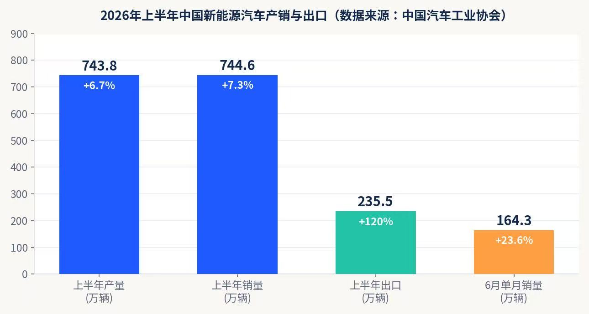
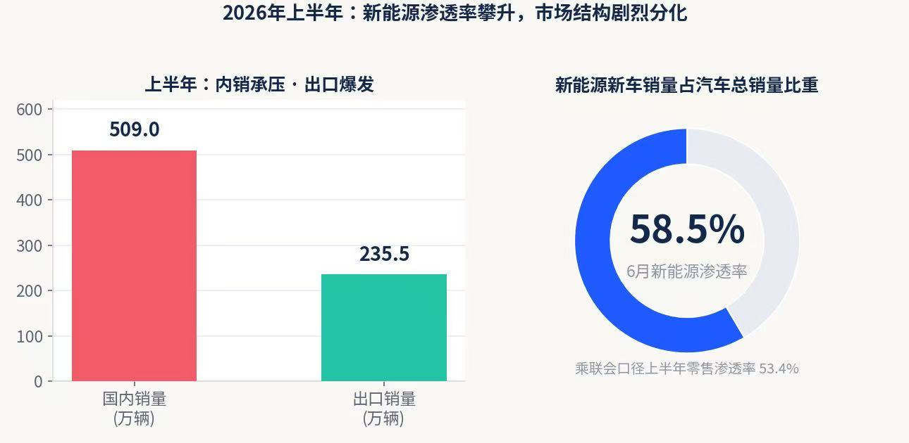
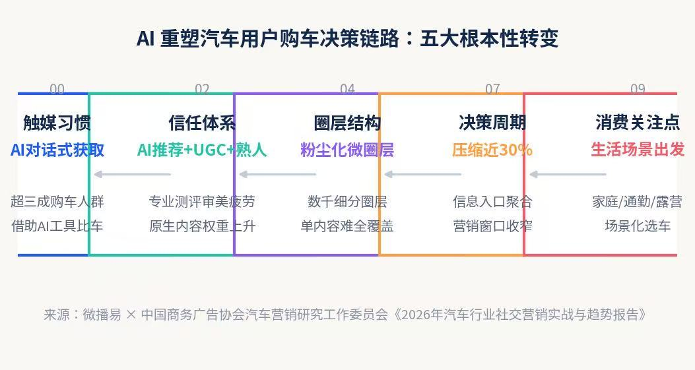
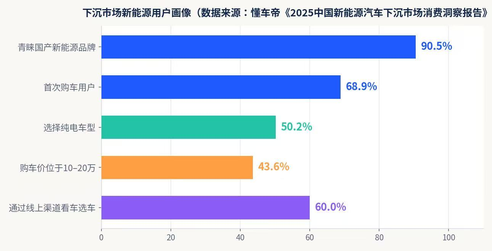

基于全网公开报告与行业数据的营销参考指南 —— 市场大盘 · 用户洞察 · 八大趋势 · 案例拆解 · 策略建议
开始阅读↓本报告基于中国汽车工业协会、乘联会、QuestMobile、懂车帝、微播易 × 中国商务广告协会汽车营销研究工作委员会、艾瑞咨询、麦肯锡、盖世汽车、36氪等机构 2025 年末至 2026 年 7 月公开发布的数据与报告整理。
产销总量、竞争格局与政策生态三条线索，勾勒 2026 年上半年的市场底色。
据中国汽车工业协会数据，2026 年上半年新能源汽车产销分别完成 743.8 万 辆和 744.6 万 辆，同比分别增长 6.7% 和 7.3%；6 月单月产销 159.8 万 / 164.3 万辆，同比增长 26% / 23.6%。
结构上呈现明显的「冰火两重天」：上半年国内销量 509 万辆，同比下降 13.4%；而出口 235.5 万辆、同比增长约 1.2 倍，6 月单月出口 52.3 万辆、同比增长 1.6 倍。国内市场的价格战与消费观望，正被海外市场的结构性增量所对冲 —— 这也解释了 2026 年车企集体「卷出海」的动因。

QuestMobile《2026 年新能源汽车市场发展半年报》显示，上半年新能源汽车活跃量突破 4400 万 辆，其中纯电活跃量近 3000 万辆，纯电平均续航提升至 485.5km。但行业已告别规模普涨：
比亚迪、吉利银河上半年销量同比分别下滑 45.9%、27.1%；零跑、蔚来、小米汽车、赛力斯增速亮眼。
新车红利主导销量格局：理想 i6、小米 YU7、钛 7 PHEV 等新上市车系跻身车系销量 TOP5 —— 产品迭代速度已成为影响销量的重要变量。
2025 年以「低价竞争、迭代竞速、爆款之争」为主旋律，车企们在同级比价格、在低价位段比智驾普及。
2026 年以来已有近 20 家车企上调终端售价（部分车型上调约 2 万元），竞争重心转向核心自研技术、产品矩阵与长期盈利体系（36氪《2026 头部车企大转向》）。

政策逻辑已从「促新车销售」转向「培育汽车消费新业态」：私域流量规模与增速成为衡量车企「用户型服务能力」的关键指标，比亚迪、长安私域流量均超 1200 万。基础设施竞争同步升级为生态营销：
比亚迪闪充网络快速搭建，高端与走量车型第一时间搭载闪充技术，吸引更多车主接入闪充网络，形成可持续的服务闭环与竞争壁垒。
蔚来换电从自用到子品牌共享再到联盟开放，以「技术兼容 + 生态扩容」将补能网络升级为行业共享基础设施；截至 2026 年 6 月，蔚来、乐道、萤火虫三大品牌车系活跃量加总超 114 万辆。
高德地图成为汽车智能导航超级入口，华为超充联盟入驻高德地图，实现「充电服务」与「高频导航场景」深度融合，让用户在规划行程时即可无缝获取超充服务。
2025 年新能源汽车下乡车型首次破百（124 款），累计触达用户超 5000 万人次；到 2030 年中国农村汽车保有量将超 7000 万辆、市场规模近 5000 亿元，当前农村渗透率不足 5% vs 城市约 32%。
AI 正在重写用户的「看、选、买」全链路 —— 谁先理解新决策逻辑，谁就拿到下一阶段的定价权。
微播易联合中国商务广告协会汽车营销研究工作委员会发布的《2026 年汽车行业社交营销实战与趋势报告》指出，AI 已重塑消费者完整购车决策链路，用户行为呈现五大根本性转变：
搜索引擎 / 汽车垂媒主动检索
大模型对话式获取，超三成购车人群借助 AI 工具对比车型参数
KOL、垂直媒体专业测评
对商业化测评审美疲劳，信任转向 AI 推荐、真实原生 UGC 与微圈熟人推荐
大众化、泛圈层传播
圈层粉尘化，数千细分兴趣标签与文化圈层并存，单一内容难以覆盖多元人群
多平台跳转、长链路比较
AI 收拢信息触点，决策效率提升近三成，留给品牌的营销窗口期持续收窄
动力、续航、配置参数
从家庭出行、通勤、露营等真实生活场景出发，寻找契合生活方式的车型
这意味着传统营销体系的四大系统性失效：圈层粉尘化瓦解中心化流量分发；AI 掌握信息交互主动权；参数堆砌式「工程师营销」难以完成场景种草；线索价格连年暴涨、广告换线索模式陷入成本内卷。

懂车帝《中国新能源汽车下沉市场消费洞察报告》刻画了下沉市场用户的鲜明特征：近 60% 用户通过汽车垂媒 App、抖音等线上渠道看车选车，「线上研究、线下体验」是典型购车场景；超 90% 消费者青睐国产新能源品牌；68.9% 为首次购车；50.2% 选择纯电车型；43.6% 购车价位于 10–20 万元。「纯电续航、价格」排在「外观、品牌」之前，实用主义优先。

对营销的启示：下沉市场传播应依托线上平台做「信任前置」（直播讲解、车主证言、乡镇巡展），同时补足维保网络与公共充电桩体验 —— 服务即营销。
设计、内饰质感、智能化座舱与场景化内容（通勤、亲子、露营）是打动女性用户的关键触点（新浪财经研究）。
3 年车龄新能源车中，坦克 400 Hi4-T、理想 MEGA、坦克 700 Hi4-T 跻身 TOP5，小米 SU7 以 63.7% 保值率位居第 6；1 年车龄中长安启源 Q05 保值率达 95.8% ——「高质价比 + 技术可靠性」成为新的保值密码，国产新能源品牌占据保值率榜单 7 席。
综合各机构报告与行业实践，2026 年电动汽车营销的竞争主轴，可概括为八条趋势线。
在电动化竞争的下半场，技术发布会与「上市即热点」成为声量引擎：小鹏 GX 技术发布会、智己 LS8、蔚来 ES9 上市发布会等内容稿件密集产出；理想 L9 以「具身智能旗舰」定义产品叙事；长安以「天枢智能 + 蓝鲸超擎」双技术 IP 构建品牌叙事。营销团队需要把「技术参数」翻译成「用户价值语言」，并围绕发布会节点搭建内容矩阵。
汽车直播从风口回归理性：36氪报道显示，汽车直播 CPL（单条线索成本）高达 67–200 元，行业单线索获客成本同比上涨约 18%；抖音「双十一」心动购车节 GMV 2.78 亿元但难以复制电商带货逻辑，直播正沉淀为「留资引流 + 私域承接」的工具。粗放投流失效，短视频直播一体化投放、达人分层（金字塔 KOL + 私域 KOC）成为标配。
微播易报告提出三大 AI 新质营销生产力：① AIGC 重构内容生产 —— 基于品牌商品库、人群库、场景库、热点库批量产出适配多圈层的短视频 / 图文，摆脱单一 TVC 全网投放；② GEO（生成式引擎优化）重塑流量获取 —— 让品牌社交 UGC 成为大模型推荐的「隐形燃料」，在用户 AI 提问时优先触达；③ AI 智能体赋能经销商 —— 总部下放 AI 内容工具至门店，实现「千店千面」数字营销矩阵与总部—终端数据互通。
比亚迪、长安私域流量超 1200 万，私域已成为衡量车企「用户型服务能力」的核心指标。车主社区、App、企微社群承担从潜客培育到复购转介绍的全程运营；理想、蔚来以「家庭 / 行政」场景社群运营强化品牌忠诚；麦肯锡建议车企以「用户全生命周期」视角整合公域获客与私域留存。
头部车企年迭代 8–12 款新车，多车型同步上市成为常态，新车传播窗口期压缩至 30 天以内。单一车型、单一平台打法失效，车企转向「全品类营销」：跨车型人群包复用、素材快速冷启动、抖音 / 小红书 / 微博 / 视频号 / 懂车帝 / 汽车之家全域分发，并配套车型 ID + 手机号双重去重、分层归因的数据体系。
2026 一季度汽车出口 222.6 万辆、同比增长 56.7%，其中新能源出口 95.4 万辆、同比增长 1.2 倍。零跑以「合资合作（Stellantis）+ 本地研发制造 + 产品适配」模式在欧洲 16 国上牌 2.33 万辆、同比增长 726.5%，意大利纯电市占率 33.5%；长安发布「海纳百川」计划 2.0 与「1445」全球战略。出海营销的核心命题：本地化叙事、合规传播、售后口碑与「在当地为当地」的品牌信任。
用户不再为参数买单，而为生活场景买单：家庭出行、城市通勤、户外露营、亲子安全等场景成为内容主线；小红书「种转一体」、B 站深度测评、抖音生活场景种草构成组合拳。理想、小鹏已把技术隐藏于场景体验背后，用「生活解决方案」建立情感联结。
多车型同步传播倒逼数据中台建设：线索去重、分车型归因、动态出价优化成为投放标配；智能座舱正崛起为「出行场景第五营销屏」—— 车内位置轨迹、交互记录、出行时段等数据比社交标签更精准地还原用户真实生活需求，为出行前意图拦截、行驶中场景种草、驻车时段营销提供全新触点。
六家品牌，六种打法：从流量降维到生态共建，从场景叙事到出海扎根。
小米将互联网「发布即顶流、流量即转化」的打法移植到汽车：SU7 / YU7 以现象级发布会、粉丝社群、生态链联动（手机 × 车 × 家）制造持续话题，YU7 上市即跻身上半年车系销量 TOP5；3 年车龄保值率 63.7% 印证「高质价比 + 技术形象」的心智建设成果。启示：流量运营能力 + 生态产品矩阵，可以重塑高端新能源品牌认知速度。
问界等鸿蒙智行品牌以「含华量」（鸿蒙座舱、ADS 智驾、华为门店渠道、超充联盟）构建技术信任背书；华为超充联盟入驻高德地图，实现导航场景内的充电服务无缝触达。新一代问界 M9 增程版与蔚来 ES9 同日上市、定价相近，正面争夺 BBA 升级用户。启示：生态型品牌可以把「技术底座 + 渠道网络 + 场景服务」打包成营销资产。
比亚迪以闪充网络快速搭建「补能服务闭环」，高端与走量车型第一时间搭载闪充技术吸引车主接入；私域流量超 1200 万，配合王朝 / 海洋 / 腾势 / 方程豹 / 仰望多品牌矩阵，覆盖从大众到高端的全价格带。上半年销量同比下滑 45.9% 的「高基数阵痛」也提示：规模领先者同样需要依靠新品节奏与用户运营对冲增速回落。
蔚来 ES9 以行政豪华定位正面迎战问界 M9；换电网络从自有走向「蔚来 + 乐道 + 萤火虫」共享再到联盟开放，三大品牌车系活跃量超 114 万辆。增换购用户来源集中于本品牌与 BBA 豪华车型，印证国产高端品牌对传统豪华的「存量锁客 + 市场替代」。启示：用户运营（NIO House、换电体验、社区共创）是高端品牌最深的护城河。
零跑与 Stellantis 合资成立零跑国际，2026 一季度海外出口超 4 万辆创历史新高：欧洲 16 国上牌 2.33 万辆、同比增长 726.5%，欧盟 12 国纯电销量约 1.7 万辆居中国纯电品牌第一；意大利纯电市占率 33.5%、德国一季度上牌 3168 辆（+370.7%）。缅甸 SKD 工厂 16 个月投产、慕尼黑欧洲创新中心落地，海外销售网点约 950 家。启示：出海营销的胜负手在「当地制造 + 当地渠道 + 当地信任」。
新一代理想 L9 定价 45–50 万元，以「具身智能旗舰 SUV」定义产品叙事：29 英寸 6K 全景屏、移动屏、自研芯片算力升级，延续「家庭旗舰」心智；理想 L9 用户集中于 31–40 岁、二线及以上城市家庭。理想 i6 等新车型跻身车系销量 TOP5，验证「家庭场景 + 技术迭代」双叙事的可复制性。
四组清单，覆盖内容、渠道、转化与组织 —— 可直接落入 2026 下半年工作计划。
中国汽车工业协会《中国汽车工业产销快讯》2026 年第 7 期
QuestMobile《2026 年新能源汽车市场发展半年报》（2026-07）
微播易 × CAAC《2026 年汽车行业社交营销实战与趋势报告》（2026-07）
艾瑞咨询《2026 年汽车行业 AI 信源影响力指数报告》（2026-06）
懂车帝《2025 中国新能源汽车下沉市场消费洞察报告》（2025-12）
中国电动汽车百人会《中国农村地区新能源汽车市场预测》
盖世汽车 / 第一电动网《2026 上半年新能源乘用车市场分析》
经济观察网《乘联分会：上半年新能源乘用车厂商出口量同比增长 124.3%》（2026-07-08）
36氪《2026 头部车企大转向：从价格混战到比拼技术、矩阵作战》（2026-05）
36氪 / Tech星球《200 元买一条客户线索，汽车直播正在掏空经销商钱包》（2026-05）
中国金融观察网《2026 汽车全品类营销选型指南》（2026-07）
巨懂车 × 抖音生活服务《数字化 4.0 时代：汽车交易线上转型白皮书》
新榜研究院《车企抖音热搜内容运营与流量转化白皮书》
麦肯锡《车企用户运营：博采众长，深化客户体验》
易车 / 盖世汽车《零跑出海分析：以合资为纽带的本地化样本》（2026）
长安汽车《「海纳百川」计划 2.0 与「1445」全球战略》（2026 北京车展）
新浪财经《2026 年中国女性汽车消费市场现状及发展前景分析》
乘联会 2026 年上半年新能源乘用车市场零售数据